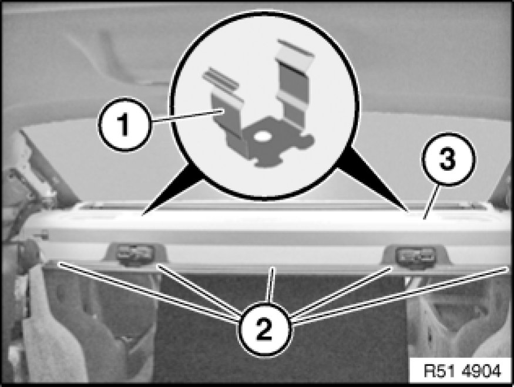

51 46 011 Removing and Installing/Replacing Trim For Oddments Tray (Back Shelf)
51 46 011 - Removing and installing/replacing trim for oddments tray (back shelf)

Necessary preliminary tasks:
- Remove left/right trim panel for roof pillar Removing and Installing/Replacing Trim Panel For Left or Right Rear Roof Pillar (C-pillar)
- Remove all Top Tether eyelets for child seat
- Remove cover for seat belts 51 46 ... Removing and Installing/Replacing Cover For Rear Left or Right Seat Belt on left/right
- Remove left/right armrest side sections Removing and Installing/Replacing Rest Side Section on Left or Right Rear Seat Backrest

Remove supports (1).
Release clips (2) and carefully feed out rear parcel shelf (3) towards front.
If necessary, disconnect plug connections.
Installation:
Make sure rear parcel shelf (3) is correctly seated in rear grille.
Make sure supports (1) are correctly seated.

Replacement:
- Modify or replace trim on rear window shelf 51 46 ... Removing and Installing/Replacing Trim on Rear Window Shelf (Parcel Shelf)
- Convert or replace rear left/right mid-range speaker